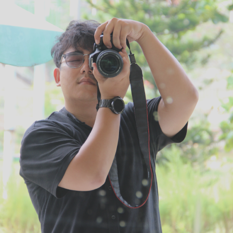

Experienced in driving end-to-end Software Testing Life Cycles (STLC)—from initial scoping and risk assessment to final release. I like to deep dig complex exploratoty test and turn it into scalable automation test for both mobile and web applications.
Download CVFeature: Dynamic QR Code Generation
@P0 @Regression @Automation
Scenario: Verify the merhant can generate dynamic QR
Given user is on static QR code page
When user selects "Generate dynamic QR"
And user input amount "$100"
Then dynamic QR code is generated with amount "$100""Observant by Nature, Engineer by Trade."
I am a Quality Engineer based in Indonesia, driven by the art of breaking software to make it unbreakable. With a background in Computer Science, I have honed my skills in both manual and automated testing, specializing in mobile and web applications. My passion lies in crafting robust test strategies that not only catch bugs but also enhance the overall user experience.
...in my spare time, I like to take my camera to the street and capture the beauty of mundane, unscripted life through a lens. It’s my way of stepping away from the screen, embracing the chaos of the city, and finding still frames in a fast-moving world. For me, catching that one perfect candid frame feels just as satisfying as catching a critical edge-case bug.

Pardon my selfie!Midtrans | Sep 2025 - Present • Full-time
Midtrans | Apr 2024 - Sep 2025 • Contract
Tools, languages, and frameworks I leverage to ensure bulletproof software quality:
Architected a scalable mobile automation framework using TapMind client, handling dynamic UI contexts and robust exception management.
Formulated and implemented strict Gherkin syntax standards for cross-functional teams, bridging the gap between PMs, Devs, and QA.
Integrated test suites with CI/CD pipelines, optimizing parallel execution strategies across various device farms.